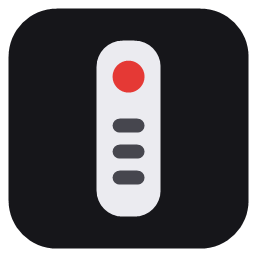
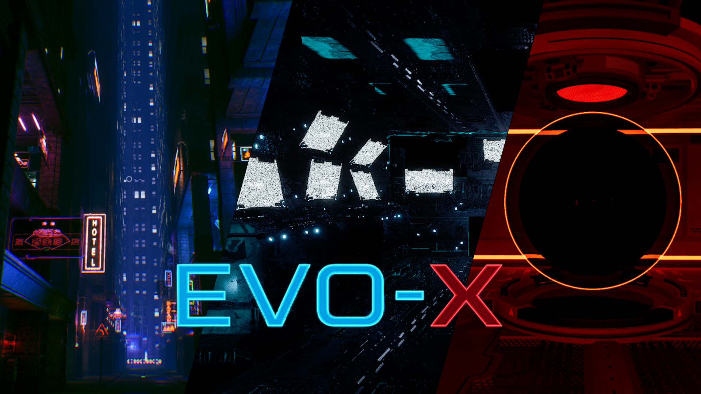

PairBeam
A web remote control (phone + relay + agent) for Sony Bravia TVs and PC control.
IT Teacher!
I'm particularly interested in the space between web development and applied AI: knowledge representation, recommender systems, and turning structured data into something people can actually explore.
Here you can find some of the things that I've built.

A web remote control (phone + relay + agent) for Sony Bravia TVs and PC control.

A knowledge-based menu recommender combining DMN, Prolog, an OWL ontology, SWRL rules, SPARQL, SHACL and a BPMN extension.
Four from-scratch NumPy models — polynomial regression, a generative classifier and logistic regression — fit to exam datasets via cross-validation.
This application aims to efficiently manage an e-commerce platform specialized in tech products. It's designed to give users an intuitive, personalized browsing experience, making it easy to discover and purchase products that combine style and technology.
This section is private.
Wrong password.
The latest from the world of tech, updated daily from Hacker News.
No stories match your interests right now.